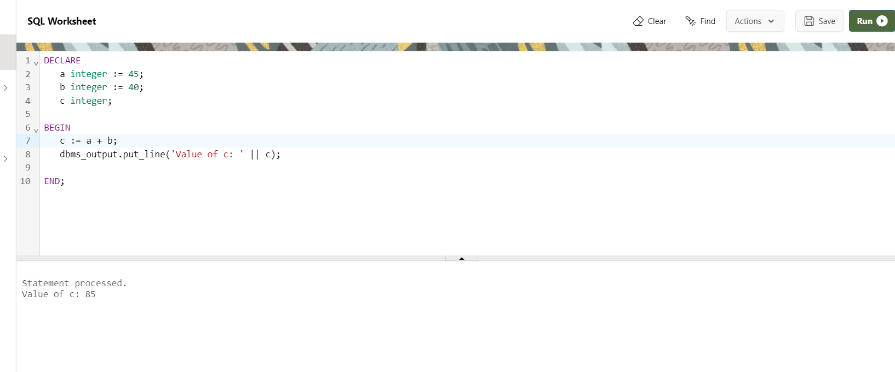

PL/SQL Variables
A variable is a meaningful name which facilitates a programmer to store data temporarily during the execution of code. It helps you to manipulate data in PL/SQL programs. It is nothing except a name given to a storage area. Each variable in the PL/SQL has a specific data type which defines the size and layout of the variable's memory.
A variable should not exceed 30 characters. Its letter optionally followed by more letters, dollar signs, numerals, underscore etc.
Naming rules for PL/SQL variables
- The variable_name should not exceed 30 characters.
- Variable name should not be the same as the table table's column of that block.
- The name of the variable must begin with ASCII letter. The PL/SQL is not case sensitive so it could be either lowercase or uppercase. For example: v_data and V_DATA refer to the same variables.
- You should make your variable easy to read and understand, after the first character, it may be any number, underscore (_) or dollar sign ($).
- NOT NULL is an optional specification on the variable.
Syntax
variable_name [CONSTANT] datatype [NOT NULL] [:= | DEFAULT initial_value]
Example
DECLARE
a integer := 45;
b integer := 40;
c integer;
BEGIN
c := a + b;
dbms_output.put_line('Value of c: ' || c);
END;
